Chapter 3. 시계열 분석
가격과 수익률에 남은 시간적 패턴, 자산 간 관계, 수준 되돌림, 숨은 추세를 찾아 매매 신호로 바꾼다
0. 핵심 요약
3장은 여섯 개의 선형 모형을 차례로 쌓는다. AR(p) → ARMA(p, q) → ARIMA(p, d, q) → VAR(p) → VEC(q) → 상태공간 모델. 뒤로 갈수록 더 많은 것을 보지만 그만큼 추정해야 할 것도 늘어난다. 그래서 이 장의 마지막 결론은 “모형을 키우라”가 아니라 “모수를 줄이고 제약을 걸라”다.
설명은 가능한 한 숫자로 확인한다. 평균 100에 어제 110이면 φ=0.8일 때 오늘은 108, 내일은 106.4다. 100.02에 사서 100.00에 팔면 가격이 그대로여도 0.02를 잃는다. 예측수익률 2%·1%·−1%는 섹터 중립을 거치면 +40%·+10%·−50% 비중이 된다. 수식이 막히는 자리에서는 이 숫자들을 먼저 보면 된다.
- 무엇을 모델링하는가 — 가격 자체인가, 평균에서 벗어난 편차인가, 변화량인가, 보이지 않는 상태인가?
- 그 패턴은 거래 가능한가 — 통계적으로 보이는 평균회귀가 호가 스프레드를 이기는가?
- 왜 단순한 모델을 고르는가 — 가장 잘 맞는 모델이 왜 가장 좋은 모델이 아닌가?
| 모형 | 모델링 대상 | 해결하는 문제 | 새로 생기는 부담 |
|---|---|---|---|
| AR(p) | 평균으로부터의 편차 | 과거 가격만으로 다음 값을 예측 | 평균 μ가 일정해야 한다 — 실제 주가는 아니다 |
| ARMA(p,q) | 편차 + 과거 예측오차 | 필요한 시차 수를 줄인다 | 추정할 모수가 늘어 과적합 위험 |
| ARIMA(p,d,q) | 차분한 값(수익률) | 비정상 가격을 정상으로 바꾼다 | 가격 수준 정보가 빠진다 |
| VAR(p) | 여러 종목의 가격 벡터 | 종목 간 상호작용을 포착 | 계수 해석이 직관적이지 않다 |
| VEC(q) | 변화량 + 어제의 수준 | 변화량을 예측하되 수준도 본다 | 수준이 되돌린다는 가정이 필요하다 |
| 상태공간 · 칼만 | 관측되지 않는 상태 | 이동평균·헤지비율을 매일 갱신 | 은닉 변수의 자유도 → 과적합이 가장 심하다 |
1. 들어가며 — 시계열 분석은 어디에 쓰는가
- 교재는 시계열 기법이 펀더멘털 정보가 쓸모없는 시장에서 가장 빛난다고 본다 — 통화와 비트코인이 그 예다.
- 그렇다고 통화 전용은 아니다. 이 장은 주식에 적용하는 예도 함께 다룬다.
- 시계열 분석은 기술적 분석이 아니다. 하나는 사람이 만든 규칙, 다른 하나는 데이터에서 추정한 통계 모델이다.
- 펀더멘털이 넘치는 주식에서도 통한다. 주가는 기업 가치만으로 움직이지 않기 때문이다 — 수급·심리·모멘텀이 남긴 패턴이 시계열 모형의 대상이다.
- 시계열 모델링의 출발점이 정상성이고, 그 전제를 여러 가격 사이의 관계로 넓힌 것이 공적분이다.
교재가 3장을 여는 방식이 인상적이다. 시계열 기법이 가장 쓸모 있는 곳은 예측이 쉬운 시장이 아니라 다른 수단이 전부 실패한 시장이라는 것이다. Lyons 교수(2001)의 인용 — 교과서적 모델이 설명할 수 있는 월간 환율 변화의 비율이 본질적으로 0이라는 — 이 그 근거로 놓인다. 펀더멘털로 설명이 안 되니 가격 자체의 통계 구조라도 보자는 순서다.
그래서 이 장의 예제는 통화(AUD.USD)로 시작하지만 거기서 끝나지 않는다. 펀더멘털 정보가 넘치는 주식 시장에서도 기술적 분석이 나름의 자리를 갖듯, 컴퓨터 하드웨어 주식 바스켓과 EWA–EWC ETF 페어가 뒤이어 등장한다. 비트코인 예시는 7장으로 미뤄 둔다.
아니다. 다만 겹치는 부분이 있다. “20일 이동평균선을 위로 돌파하면 매수”는 사람이 만든 규칙이고 통계적으로 증명하지 않는다. 반면 시계열 분석은 $P_t = 0.8 P_{t-1} + 0.1 P_{t-2} + \varepsilon$ 같은 모델을 데이터에서 직접 추정한다.
이동평균은 양쪽에서 모두 쓰이는데 목적이 다르다. 기술적 분석에서는 그 자체가 매매 규칙이고, 시계열 분석에서는 잡음을 걸러내는 전처리다. 교재가 이동평균을 언급하는 이유도 여기 있다 — 그것은 가장 기초적인 신호처리 필터일 뿐이고, 이 장의 끝에는 칼만 필터가 기다린다.
| 구분 | 기술적 분석 | 시계열 분석 |
|---|---|---|
| 성격 | 투자 철학이자 매매 방법 | 데이터를 다루는 수학·통계 기법 |
| 목적 | 매매 신호 찾기 | 미래 데이터 예측 |
| 기반 | 차트, 패턴, 지표 | 통계학, 확률론 |
| 쓰는 데이터 | 가격, 거래량 | 가격, 거래량, 금리, 환율 등 시간에 따라 기록되는 값 |
| 대표 기법 | 이동평균, MACD, RSI, 볼린저밴드 | AR, ARIMA, VAR, GARCH, 칼만 필터 |
표 2에서 갈리는 지점은 목적이다. 기술적 분석은 곧바로 매매 신호를 찾고, 시계열 분석은 먼저 데이터를 예측한 뒤 그 예측에서 신호를 만든다. 그래서 이동평균처럼 양쪽에 다 등장하는 도구도 쓰임이 갈린다 — 한쪽에서는 그 자체가 규칙이고, 다른 쪽에서는 잡음을 걸러내는 전처리다.
1.1 펀더멘털이 넘치는 주식에 왜 시계열 분석인가
주식에는 분석할 재료가 아주 많다. 매출·영업이익·순이익 같은 실적, PER·PBR 같은 가치평가 지표, 배당, CEO 교체, 신제품 출시, 그리고 금리와 경기 상황까지. “올해 AI 반도체 수요가 늘어나니 영업이익이 증가하겠다”처럼 기업의 가치로 판단하는 것이 펀더멘털 분석이다.
기술적 분석은 이 정보를 거의 보지 않는다. 가격, 거래량, 이동평균선, RSI, MACD, 추세선만 본다. “20일 이동평균선을 돌파했다”, “거래량이 갑자기 세 배로 늘었다” 같은 신호로 매매한다. 그러면 자연스럽게 의문이 생긴다 — 기업 정보가 이렇게 많은데 왜 가격만 보는가?
그런데 현실에서는 기술적 분석만으로 수익을 내는 사람이 있다. 펀더멘털 정보가 넘치는 시장에서도 가격만 보는 접근이 여전히 유효하다는 뜻이다. 교재가 시계열 분석을 주식으로 넓히며 드는 근거가 바로 이 유비다.
- 환율 — 기업 가치 같은 펀더멘털이 거의 없다 → 시계열 분석이 특히 잘 맞는다
- 비트코인 — 같은 이유로 잘 맞는다(교재는 7장에서 다룬다)
- 주식 — 펀더멘털이 풍부하지만, 기술적 분석이 통하듯 시계열 분석도 통한다
주식에서도 통하는 이유는 주가가 기업 가치만으로 움직이지 않기 때문이다. 삼성전자의 실적에 아무 변화가 없어도 외국인의 대량 매수, 기관의 프로그램 매매, 옵션 만기, 투자자 심리, 단기 모멘텀 때문에 가격이 일정한 패턴을 보인다. 이런 움직임이야말로 AR·ARIMA·VAR·칼만 필터가 포착하려는 대상이다.
그래서 두 분석은 경쟁하지 않는다. 펀더멘털 분석은 기업의 내재가치를 설명하려 하고, 시계열 분석은 가격이 어떻게 움직이는지를 설명하고 예측하려 한다. 서로 다른 정보를 다루는 보완 관계다.
1.2 정상성과 공적분
교재는 정상성을 주석 1에서 짧게 정의하고 넘어간다. 하지만 이 장의 모든 모형이 그 위에 서 있으므로 먼저 정리해 둔다. 정상성이란 시간이 지나도 데이터의 통계적 성질이 변하지 않는 것이다. 평균이 일정하고, 분산이 일정하고, 자기상관 구조가 일정하면 정상이다. 매일 20도 근처를 오가는 기온은 정상이고, 100 → 105 → 110 → 118 → 130 → 145 → 160으로 계속 오르는 주가는 평균 자체가 변하므로 비정상이다.
주가가 비정상인 이유는 구조 때문이다. 오늘 가격은 어제 가격에 오늘의 변동을 더한 값이라서, 한 번 올라간 가격은 되돌아오지 않는 한 평균 자체를 끌고 올라간다. 반면 같은 데이터를 수익률로 바꾸면 +1%, −0.5%, +0.8%, −0.2%, +0.3%처럼 0% 근처를 오간다. 가격은 비정상이지만 수익률은 정상인 것이다.
공적분은 각각은 비정상이지만 둘의 관계는 정상인 경우다. 삼성전자가 100 → 110 → 120 → 130 → 140 → 150으로, SK하이닉스가 50 → 55 → 60 → 65 → 70 → 75로 오른다고 하자. 둘 다 비정상이다. 그런데 항상 삼성전자 = 하이닉스 × 2 라면 $삼성 - 2 \times 하이닉스 = 0$으로 일정하다. 현실은 정확히 2배가 아니라 하이닉스가 49, 56, 60, 64, 71, 76처럼 움직이므로 차이는 +2, −2, 0, +2, −2, −2처럼 0 근처를 오간다. 이 스프레드가 정상이라는 것이 공적분이고, 뒤에 나올 VEC와 EWA–EWC 페어가 모두 여기에 기댄다.
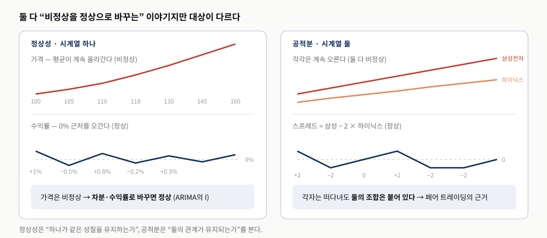
발표자 재구성. 왼쪽은 “하나를 정상으로 바꾸는 법”, 오른쪽은 “둘의 조합에서 정상을 찾는 법”이라는 서로 다른 전략을 대비한다.2. AR(p) — 과거의 자기 자신으로 예측한다
- 가장 단순한 AR(1)은 한 시점과 다음 시점을 잇는 선형 회귀일 뿐이다 — 자기 과거로 자신을 설명하므로 자기회귀다.
- AR은 가격이 아니라 평균에서 벗어난 편차를 예측한다. 그래서 μ를 빼고 시작한다.
- 교재는 AUD.USD 1분봉 중간가격에 AR(10)을 적합하고, 차수 10은 BIC가 고른다.
- 표 3.1의 $\phi_1$은 1에 매우 가깝다 — 되돌림이 있긴 하지만 아주 느리다는 뜻이다.
- 그림 3.1의 표본외 연율화 158%는 화려하지만, 중간가격 체결이라는 전제 위에서만 성립한다.
- 그 158%가 성립하는지는 두 가지에 달려 있다 — $\phi$가 실제로 뜻하는 것, 그리고 매수–매도 호가 반등.
시계열 분석에서 가장 단순한 모델은 AR(1)이다. 이것은 한 시점의 가격과 그 다음 시점의 가격을 관계짓는 선형 회귀 모델일 뿐이다.
여기서 $Y(t)$는 시각 $t$에서의 가격이고, $\phi$는 (자기)회귀 계수이며, $\varepsilon$은 평균이 0인 가우시안 잡음으로 때때로 혁신(innovation)이라고도 불린다. 자기 자신의 과거로 자신을 설명하기 때문에 이 이름이 자기회귀 과정(auto-regressive process)이다.
용어를 한 번만 갈라 두면 이후가 편하다. 회귀는 다른 변수로 목표 값을 예측하는 것이고, 자기회귀는 자기 자신의 과거 값으로 현재나 미래를 예측하는 것이다. AR은 Auto Regressive, 곧 “자기 자신을 이용해 회귀한다”는 뜻이다.
한 문장으로 줄이면 “오늘 가격은 어제 가격의 영향을 받는다”가 된다. 어제 삼성전자가 100,000원이었다면 오늘은 99,800원, 100,100원, 100,300원처럼 어제 근처에서 움직일 가능성이 높다는 가정이다. 다만 모델이 실제로 예측하는 것은 가격 자체가 아니라 평균에서 얼마나 벗어났는지다 — 그래서 식의 양변에서 $\mu$를 뺀다.
같은 발상을 시차 $p$개로 늘린 것이 AR($p$)다.
AR(p)는 현재값을 과거 $p$개 값의 선형결합으로 쓴다. 교재는 이것을 AUD.USD 1분봉에 적용하는데, 두 가지 선택이 눈에 띈다. 첫째, 체결가가 아니라 중간가격을 쓴다. 둘째, 시차 $p$를 사람이 정하지 않고 BIC로 고르며 그 결과가 10이다. 두 선택 모두 이 절의 결론을 좌우한다.
2.1 차수 $p$는 어떻게 정하는가
이 식을 다시 보면 다중 회귀 모델일 뿐임이 드러난다. 시간 $t$의 가격이 종속변수이고, 최대 $p$개의 시차를 가진 과거 가격들이 독립변수다. 보통의 회귀와 달라진 점은 설명변수가 “다른 무엇”이 아니라 “자기 자신의 과거”라는 것뿐이다. 그래서 AR(1)은 어제 하나만 보고, AR(3)이면 2일 전·3일 전까지 본다 — 오늘을 예측하는 데 어디까지 거슬러 볼 것인가를 정하는 문제다.
그러면 $p$를 몇으로 둘 것인가. $p$를 하나의 매개변수로 승격시키면 데이터에 가장 잘 맞는 값을 찾는 문제가 된다. 다만 무작정 늘리면 안 된다. AR(100)이라면 그 시기에만 있던 우연한 패턴까지 외우게 되는데, 이것이 과적합이다.
그래서 BIC를 쓴다. BIC는 모델의 음의 로그우도에 비례하되 거기에 $p$에 비례하는 항을 더해 복잡도에 벌점을 매긴다. 목적은 BIC를 최소화하는 것이고, 방법은 완전 탐색(brute-force exhaustive search)이다 — 가능한 $p$를 전부 넣어 보고 가장 작은 값을 고른다.
AR(1)의 BIC가 100, AR(5)가 90, AR(20)이 95라면 AR(5)를 고른다. AR(1)은 너무 단순해 적합도가 낮고, AR(20)은 적합도가 조금 나아지더라도 벌점이 그보다 크다. 가장 잘 맞는 모델이 아니라 합이 가장 작은 모델을 고르는 것이다.
교재의 코드는 이 탐색을 그대로 옮긴 것이다. 시차를 1부터 60까지 — 1분봉이니 과거 한 시간이다 — 바꿔 가며 로그우도를 모으고, aicbic로 BIC를 계산해 최소인 $p$를 고른다.
LOGL = zeros(60, 1); % 최대 60개 시차(1시간)의 로그우도
P = zeros(size(LOGL));
for p = 1:length(P)
model = arima(p, 0, 0);
[~, ~, logL] = estimate(model, mid(trainset), 'print', false);
LOGL(p) = logL; P(p) = p;
end
[~, bic] = aicbic(LOGL, P+1, length(mid(trainset))); % 상수 포함이라 P+1
[~, pMin] = min(bic);
fit = estimate(arima(pMin, 0, 0), mid); % 미지의 계수 추정이 절차를 2007년 7월 24일부터 2014년 8월 12일까지의 AUD.USD 1분 중간가격에 적용하면 $p = 10$이 나오고, 그때 추정된 $\mu,\ \phi_1,\ \ldots,\ \phi_{10}$이 표 3.1이다. 이어서 2014년 8월 12일부터 2015년 8월 3일까지를 표본외 구간으로 두고 한 걸음 앞을 예측한다.
for t = testset(1):size(mid, 1)
y = forecast(fit, 1, 'Y0', mid(t-pMin+1:t)); % 최근 pMin개면 충분하다
yF(t) = y(end);
end
deltaYF = yF - mid; % 예측가격 − 현재가격
pos = zeros(size(mid));
pos(deltaYF > 0) = 1; % 오를 것으로 보면 매수
pos(deltaYF < 0) = -1; % 내릴 것으로 보면 매도여기서 yF(t)는 시각 $t$까지의 데이터로 만든 예측값이므로 실제로는 $t+1$의 가격에 대한 예측이다. 신호 규칙은 단순하다 — 예측 가격이 현재 가격보다 높으면 매수, 낮으면 매도. 전체 흐름은 탐색 → 추정 → 예측 → 신호의 네 단계로 요약된다.
| 표에 실린 항목 | 무엇을 담고 있나 | 발표에서 주목할 점 |
|---|---|---|
| 상수 오프셋 | 중간가격 수준에 대응하는 절편 | 기준점을 어디에 둘지만 정한다 — 예측력과는 무관하다 |
| $\phi_1$ | 1에 매우 가까운 값 | 이 절의 핵심. 되돌림은 있지만 랜덤 워크와 구분하기 어려울 만큼 느리다 |
| $\phi_2 \sim \phi_{10}$ | 0 주변에 흩어진 작은 값들 | 개별 시차는 약한데도 BIC가 10을 골랐다 — 약한 신호가 여럿 모인 형태다 |
| 잡음 분산 | 1분 단위 변동의 크기 | 신호 대비 잡음의 기준. 뒤의 스프레드 논의와 직접 비교된다 |
표 3에서 실무적으로 가장 중요한 줄은 $\phi_1$이다. 1에 가깝다는 것은 “되돌아오긴 하는데 아주 천천히”라는 뜻이고, 뒤에 나올 ARMA(2, 5)에서 이 값이 확실히 1보다 작아지는 것과 대비된다.
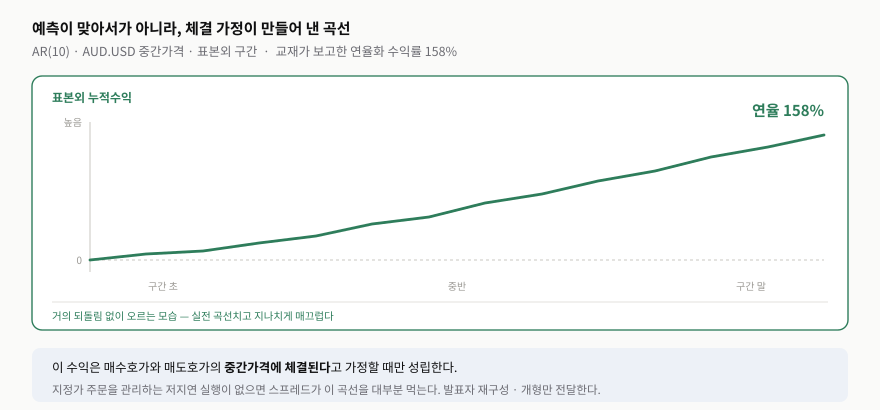
발표자 재구성 — 교재 그림을 옮기지 않고, 교재가 본문에서 밝힌 표본외 연율화 158%와 곡선의 개형만 도식으로 옮겼다. 실제 곡선의 세부 형태는 교재를 확인한다.교재는 이 성과에 곧바로 단서를 단다. 중간가격에 체결할 수 있어야 하고, 그러려면 지정가 주문을 관리하는 저지연 실행 프로그램이 반드시 필요하다는 것이다. 종이 위에서는 158%지만 체결 인프라가 없으면 손에 쥘 수 없다. 연습문제 3.2가 정확히 이 지점을 겨냥한다 — 같은 데이터셋의 매수·매도 호가를 써서 시장가 주문만으로 백테스트하면 CAGR이 얼마가 되는지 직접 확인하라는 것이다.
2.2 왜 평균을 빼고, $\phi$는 무엇을 정하는가
평균을 빼지 않고 $Y_t = \phi Y_{t-1}$만 쓰면 어떻게 되는지 보면 이유가 분명해진다. 평균이 100인 데이터에서 φ=0.8이라면 오늘 100일 때 내일 예측은 80이 된다. 100 근처를 오가던 가격이 갑자기 80으로 예측되는 것이다. 평균을 빼면 달라진다. 어제 110이면 편차는 +10이고, φ=0.8이면 오늘 편차는 +8, 따라서 오늘 가격은 108이다. AR은 “오늘 가격”이 아니라 “평균에서 얼마나 떨어져 있는가”를 예측한다.
많은 책이 쓰는 $Y_t = c + \phi Y_{t-1} + \varepsilon_t$는 다른 모델이 아니다. 원래 식을 전개하면 $Y_t = (1-\phi)\mu + \phi Y_{t-1} + \varepsilon_t$이고, $(1-\phi)\mu$가 곧 상수항 $c$다. 표 3.1의 “상수 오프셋”이 바로 이것이다.
여기서 $\phi$가 정상성과 곧바로 연결된다. 시계열의 평균과 분산이 시간에 따라 일정하면 약정상(weakly stationary)이라 하고, AR(1)은 $|\phi| < 1$일 때 약정상이다. 그리고 약정상 시계열은 평균회귀(mean reverting) 특성을 갖는다(Chan, 2013). 반대로 $|\phi| > 1$이면 시계열은 추세(trend)를 갖게 되고, $\phi = 1$이면 랜덤 워크(random walk)가 된다. 계수 하나가 세 갈래를 가르는 셈이다. 연습문제 3.1이 첫 번째 명제 — 약정상이면 $|\phi| < 1$ — 를 분산으로 증명하게 한다.
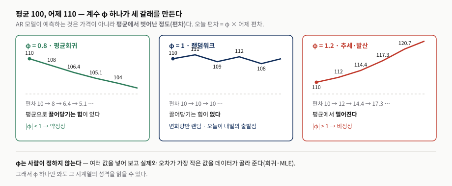
발표자 재구성. 편차 10에 φ를 거듭 곱한 값을 그대로 계산해 표시했다(0.8 → 8, 6.4, 5.12 …). 세 경로 모두 같은 식에서 φ만 바꾼 것이다.| φ | 의미 | 거래 관점 |
|---|---|---|
| 0 | 과거의 영향이 거의 없다 | 과거 가격으로는 예측 불가 |
| 0.3 | 과거의 영향이 약하다 | 약한 평균회귀 |
| 0.8 | 영향은 크지만 점차 평균으로 돌아간다 | 평균회귀 전략의 전형 |
| 0.99 | 거의 랜덤 워크 — 표 3.1의 $\phi_1$이 여기에 있다 | 되돌림을 기대하기 어렵다 |
| 1.0 | 랜덤 워크 — 끌어당기는 힘이 없다 | 방향 예측 불가, 변화량만 랜덤 |
| 1.1 | 추세가 점점 강해진다 | 추세추종의 영역 |
표 4을 표 3와 겹쳐 보면 교재의 AR(10)이 어느 자리에 있는지 보인다. 참고로 φ는 사람이 정하지 않는다. 컴퓨터가 여러 값을 넣어 보고 실제 데이터와 오차가 가장 작은 값을 고른다 — 집값 = β × 평수에서 β를 찾는 것과 같은 과정이고, MATLAB에서 arima(1,0,0)에 estimate를 걸면 내부적으로 이 최대가능도 추정이 돌아간다.
한 가지 짚어 둘 것이 있다. “평균은 시간이 지나면 변하잖아”라는 반론은 정확히 맞고, 이 질문 하나가 정상성과 비정상성을 가른다. 삼성전자 평균은 2010년 2만 원, 2020년 5.5만 원, 2025년 8만 원으로 계속 올랐다. μ가 일정하다는 것은 모델의 가정일 뿐이다. 그래서 실무는 ① 차분(ARIMA의 I), ② 수익률, ③ 롤링 윈도우로 우회한다. 교재의 μ도 “영원히 변하지 않는 평균”이 아니라 그 모델이 적용되는 구간의 평균이다.
2.3 왜 체결가가 아니라 중간가격인가
교재가 중간가격을 쓰는 이유는 한 문장으로 지나가지만, 이 절의 158%가 성립하는지 여부가 여기에 달려 있다. 호가창에 매도호가 100.02, 매수호가 100.00이 있다고 하자. 시장이 합의한 중심 가격은 그 중간인 100.01이다. 그런데 급하게 사려는 사람은 100.02에 사고, 급하게 팔려는 사람은 100.00에 판다. 두 사람이 번갈아 나타나면 체결가는 100.02 → 100.00 → 100.02 → 100.00으로 찍힌다. 호가는 한 번도 움직이지 않았는데 차트만 출렁인다.
여기서 통계 모델이 착각한다. “올라가면 곧 내려오네? 평균회귀가 있구나.” 하지만 실제로 그 신호로 거래하면 살 때 Ask, 팔 때 Bid를 써야 하므로 100.02에 사서 100.00에 팔게 되고, 가격이 전혀 변하지 않아도 −0.02다. 환전소에서 달러를 1,350원에 사서 곧바로 1,330원에 파는 것과 같다.
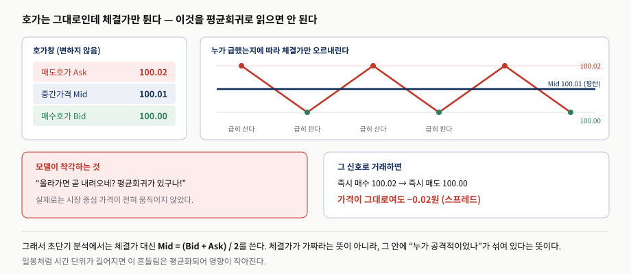
발표자 재구성. 붉은 점은 매수자가 공격적으로 체결한 시점, 초록 점은 매도자가 공격적으로 체결한 시점이다.| 구분 | 체결가 (Trade Price) | 중간가격 (Midprice) |
|---|---|---|
| 정의 | 실제로 체결된 가격 | (최고 매수호가 + 최저 매도호가) / 2 |
| 장점 | 실제 거래 가능한 가격 | 시장 중심 가격에 가깝다 · 호가 반등 제거 |
| 단점 | 누가 공격적이었는지에 좌우된다 | 내가 실제로 거래할 수 있는 가격은 아니다 |
| 답하는 질문 | “내가 얼마에 거래할 수 있었나?” | “시장이 합의한 수준이 변했나?” |
| 이 장에서 | 연습문제 3.2가 쓰라고 요구하는 가격 | 본문 AR(10)·ARMA(2, 5)가 쓴 가격 |
표 5의 마지막 줄이 이 절의 요점이다. 본문의 158%와 연습문제 3.2의 답 사이의 거리가 곧 중간가격 가정의 값이다. 시간 단위에 따라 중요도도 달라진다 — 교재 예제는 1분봉이라 호가 반등의 영향이 크지만, 일봉에서는 하루 수천 번의 거래가 평균화되어 영향이 훨씬 작다.
“통계적으로 예측 가능한 패턴인가?”만으로는 부족하다. “그 패턴이 스프레드와 수수료를 이기고 실제 돈이 되는가?”를 함께 물어야 한다.
3. ARMA(p, q)와 ARIMA(p, d, q) — 잡음의 기억을 더한다
- ARMA는 과거 값에 과거 예측오차를 더해, 같은 설명력을 더 적은 시차로 얻는다.
- AUD.USD에서 시차는 10 → 2로 줄고 $|\phi_1|$도 확실히 1보다 작아진다 — 통계적으로는 더 나은 모델이다.
- 그런데 표본외 성과는 158% → 60%로 떨어진다. 적합도와 수익은 별개다.
- ARIMA의 I는 차분이다. 로그가격을 ARIMA(p, 1, q)로 보는 것은 로그수익률을 ARMA(p, q)로 보는 것과 같다.
- 교재는 수익률 쪽 모델링이 더 간결해진 경우를 한 번도 본 적이 없다고 말한다 — AUD.USD도 p=1, q=9다.
AUD.USD에 AR(p)를 적합한 결과를 보면 가장 잘 맞는 모델이 시차 10개를 요구했다. 이렇게 많은 시차가 필요한 것은 AR(p)에서 매우 흔한 일이다. AR은 구조가 단순해서, 항을 계속 더하는 방식으로 그 한계를 보완하려 하기 때문이다. 그런데 여기에 지연된 잡음 항 q개를 더하는 작은 확장만으로 필요한 시차 수가 크게 줄어드는 경우가 많다. 이것이 ARMA(p, q), 정식 명칭으로는 자기회귀 이동평균 과정이고, q개의 지연 잡음 항이 이동평균에 해당한다.
AR과 MA는 보는 대상이 다르다. AR은 과거 가격을 보고, MA는 과거의 예측오차를 본다. ARMA는 둘을 함께 쓴다. 오차가 정보가 되는 이유는 단순하다 — 오늘 예측이 100.00이었는데 실제가 100.05였다면 $\varepsilon = +0.05$이고, ARMA는 방금 발생한 예측 실패도 다음 가격에 영향을 줄 수 있다고 본다. AR이 “가격 자체의 과거”만 보느라 10개 시차를 쌓아야 했던 것을, ARMA는 “가격이 설명하지 못한 부분”까지 보면서 훨씬 적은 시차로 해낸다.
3.1 p와 q를 함께 탐색한다
최적의 $p$와 $q$, 그리고 각 항의 계수를 찾는 절차는 AR(p)에서 한 것과 같다. 다만 이제 변수가 둘이므로 완전 탐색에 중첩 반복문이 필요하다. 시차 상한을 $p \le 10$, $q \le 9$로 두면 90개 조합을 전부 시험하는 셈이다.
LOGL = -Inf(10, 9); % p 최대 10개, q 최대 9개
PQ = zeros(size(LOGL));
for p = 1:size(PQ, 1)
for q = 1:size(PQ, 2)
[~, ~, logL] = estimate(arima(p, 0, q), mid(trainset), 'print', false);
LOGL(p, q) = logL;
PQ(p, q) = p + q; % BIC 벌점 항으로 쓸 모수 개수
end
endaicbic는 1차원 벡터를 받으므로, 2차원 행렬을 reshape로 펴서 BIC를 계산하고 최소값을 찾는다.
LOGL_vector = reshape(LOGL, numel(LOGL), 1);
PQ_vector = reshape(PQ, numel(PQ), 1);
[~, bic] = aicbic(LOGL_vector, PQ_vector+1, length(mid(trainset))); % 상수 포함
[bicMin, pMin] = min(bic);
bic(:) = NaN; % 최소 셀만 남기고 비운다
bic(pMin) = bicMin;
bic = reshape(bic, size(LOGL));마지막 세 줄이 요령이다. BIC를 다시 2차원으로 되돌리되 최소값 셀만 남기고 나머지를 NaN으로 비운다. 행 번호가 $p$, 열 번호가 $q$이므로, 숫자가 하나만 찍힌 표를 보면 최적 조합을 눈으로 바로 읽을 수 있다. AUD.USD에서는 그 셀이 행 2, 열 5에 나타난다 — 곧 ARMA(2, 5)이고, AR(p)에서 쓰던 10보다 확실히 짧은 시차다.
| 계수 | 추정값 | 읽는 법 |
|---|---|---|
| $\mu$ | 2.8038e−06 | 사실상 0 — 1분 중간가격이라 방향성 표류가 없다 |
| $\phi_1$ | 0.649011 | 바로 전 값의 영향이 가장 크다. $|\phi_1| < 1$이 확실해졌다 |
| $\phi_2$ | 0.350986 | $\phi_1 + \phi_2 \approx 1.000$ — 둘을 합치면 거의 랜덤 워크다 |
| $\theta_1$ | 0.345806 | 직전 예측오차가 다음 값으로 실제로 이어진다 — MA 항의 값어치가 여기 있다 |
| $\theta_2 \sim \theta_5$ | −0.00906, −0.01061, −0.01026, −0.00251 | 부호는 음수지만 크기가 0에 가깝다 — 사실상 $\theta_1$ 하나가 일한다 |
계수 개수만 보면 AR(10)의 10개와 ARMA(2, 5)의 7개로 후자가 간결하다. 구조를 나란히 놓으면 차이가 분명하다 — AR(10)은 가격 $Y(t-1) \ldots Y(t-10)$ 열 개를 쓰고, ARMA(2, 5)는 가격 두 개와 과거 오차 다섯 개를 쓴다. 같은 설명력을 얻는 데 필요한 시차가 그만큼 줄어든 것이다.
다만 표 6을 그대로 믿기 전에 짚을 것이 하나 있다. 교재는 $|\phi_1|$이 확실히 1보다 작아진 것을 강한 평균회귀의 근거로 든다. 그런데 AR(2)에서 정상성을 판정하는 것은 $\phi_1$ 하나가 아니라 $\phi_1 + \phi_2$이고, 그 합이 0.999997이다. 사실상 단위근 경계에 붙어 있다는 뜻이므로, “강한 평균회귀”라는 표현은 $\phi_1$만 떼어 본 진술로 읽는 편이 안전하다.
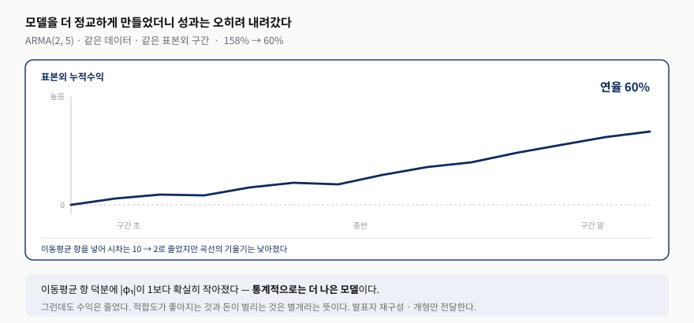
발표자 재구성 — 교재가 본문에서 밝힌 “표본외 158% → 60%”와 그림 3.1 대비 완만해진 개형만 옮겼다. 백테스트 코드는buildARMA_AUDUSD.m이다.
이것이 이 절에서 가장 값진 대목이다. 더 정교한 모델이 더 적은 돈을 벌었다. 교재의 표현대로 “시차를 줄였다고 반드시 더 나은 트레이딩이 되는 것은 아니라는 실전의 냉정한 교훈”이다. 저자의 기대는 AR만 쓰던 것에 MA 항을 더하면 예측이 좋아지고 그만큼 수익도 오르리라는 것이었는데, 결과는 반대였다. 이동평균을 끌어들인 추가 복잡성이 값을 하지 못한 것이다.
왜 이런 일이 생기는가. 네 갈래로 나눠 볼 수 있다.
- 모델 평가와 투자 평가는 다른 질문이다. 전자는 “데이터를 얼마나 잘 설명하는가”를 묻고 후자는 “돈을 벌 수 있는가”를 묻는다. 예측오차가 0.001로 아주 작아도 신호가 하루 1,000번 발생하면 수수료·스프레드·슬리피지에 먹혀 손실이 날 수 있고, 예측은 조금 나빠도 방향이 분명해 하루 한두 번만 거래하는 모델이 더 벌 수도 있다.
- 과적합이다. ARMA는 더 많은 구조를 설명하지만, 2007–2014에서 잘 맞던 패턴이 2014–2015에도 유지된다는 보장은 없다. 학습 구간에서 얻은 적합도 개선분이 표본외에서 그대로 살아남지 않는다.
- 작은 우위는 거래비용에 사라진다. 예측이 100.005이고 현재가 100.000이면 매수 신호지만, 실제로 사야 하는 값이 Ask 100.010이라면 기대 우위 +0.005는 비용 0.010에 지워진다. 우위가 작을수록 체결 조건이 결과를 좌우한다.
- 평균회귀가 있다는 것과 그것으로 버는 것은 다르다. 100 → 101 → 100처럼 되돌아오는 성질이 보여도, 언제 101에서 팔고 언제 100에서 살지를 정하는 것은 별개의 문제다.
적합도 개선과 수익 개선이 같은 방향이라는 보장이 없다는 이 사실은, 뒤의 상태공간 모델에서 훨씬 더 극적인 형태로 다시 나타난다.
3.2 ARIMA(p, d, q) — 차분해야 ARMA를 쓸 수 있다
ARIMA는 자기회귀 누적 이동평균(autoregressive integrated moving average)을 뜻한다. 금융에서 가장 단순하고 가장 흔한 경우인 $d = 1$만 보자. $Y(t)$가 ARIMA($p$, 1, $q$)라는 것은 그 차분 $\Delta Y(t) = Y(t) - Y(t-1)$이 ARMA($p$, $q$)라는 뜻이다.
왜 차분하는가. ARMA는 정상 시계열에 쓰는 도구인데 가격은 계속 오르거나 내려서 평균이 변한다. 그래서 먼저 변화량을 만들고, 그 변화량에 ARMA를 적용한다. 가격이 100, 102, 101, 104라면 차분은 2, −1, 3이다. 가격 자체는 평균이 움직이지만 이 변화량은 0 근처를 오간다. 세 기호의 역할도 여기서 갈린다 — $p$는 과거 변화량을 몇 개 볼지, $d$는 몇 번 차분할지, $q$는 과거 예측오차를 몇 개 볼지다.
$Y$를 로그가격으로 두면 이해가 훨씬 쉬워진다. $Y_t = \log(P_t)$라면 $\Delta Y_t = \log(P_t) - \log(P_{t-1}) = \log(P_t / P_{t-1})$이고, 이것이 곧 로그수익률이다. 100원에서 102원으로 올랐다면 $\log(102) - \log(100) = \log(1.02) \approx 2\%$다. 그래서 “로그가격을 ARIMA($p$, 1, $q$)로 모델링한다”와 “로그수익률을 ARMA($p$, $q$)로 모델링한다”는 같은 말이 된다.
모델 안에서 적분을 한다는 뜻이 아니다. 차분한 값을 다시 누적하면 원래 가격이 복원되기 때문이다. 앞의 예에서 시작값 100에 2, −1, 3을 차례로 더하면 102 → 101 → 104로 원래 가격이 되돌아온다. 연속수학에서 변화율을 적분하면 원래 함수가 나오는 것과 같은 관계다.
그래서 한 번 차분해야 정상이 되는 시계열을 $I(1)$이라 부른다. $d=0$은 차분이 필요 없는 경우, $d=1$은 한 번, $d=2$는 두 번 차분해야 정상이 되는 경우다.
3.3 수준을 보는 모델이 더 유연한 이유
그렇다면 처음부터 로그수익률을 ARMA로 모델링하는 편이 낫지 않을까? 시차를 줄일 수 있다면 그렇다. 그런데 교재는 그런 경우를 한 번도 본 적이 없다고 말한다. AUD.USD의 로그를 ARIMA($p$, 1, $q$)로 모델링하면 $p = 1$, $q = 9$가 나온다 — 딱히 더 간결하지 않다. 연습문제 3.3이 이것을 직접 확인하라고 요구한다.
“로그가격에 대한 ARIMA($p$, 1, $q$)는 로그수익률에 대한 ARIMA($p$, 0, $q$)와 동등하다”는 참이다. 그러나 “로그가격에 대한 ARMA($p$, $q$)가 로그수익률에 대한 어떤 ARMA($p'$, $q'$)와 동등하다”는 거짓이다. $\Delta Y$의 ARMA는 언제나 $Y$의 ARMA로 바꿀 수 있지만, 그 반대는 성립하지 않는다.
이유는 쓸 수 있는 독립변수의 폭에 있다. $\Delta Y$에 대한 ARMA는 독립변수로 $\Delta Y$만 가질 수 있다. 반면 $Y$에 대한 ARMA는 $Y$는 물론 $\Delta Y$까지 표현할 수 있다 — $\Delta Y$는 결국 두 $Y$의 차이이기 때문이다. 계수를 이렇게 잡으면 바로 드러난다.
즉 가격 수준을 쓰는 모델은 수준과 변화량을 함께 표현할 수 있고, 그래서 더 유연하며 더 나은 결과를 줄 여지가 있다. 수익률만 모델링하면 “직전에 몇 퍼센트 올랐는가”는 알지만 “지금 가격이 장기 평균보다 높은가 낮은가”는 빠진다.
$Y_t$는 자동차의 현재 위치, $\Delta Y_t$는 한 구간 동안 이동한 거리다. 변화량만 보는 모델은 최근 이동량이 +2, +1, −1이었다는 것은 알지만, 지금 목적지에서 1km 떨어져 있는지 100km 떨어져 있는지는 모른다. 수준을 함께 보는 모델은 “너무 멀리 왔으니 되돌아갈 수 있다”는 판단까지 할 수 있다.
그렇다면 변화량을 예측하면서 수준 정보도 함께 넣고 싶다면 어떻게 하는가. 그것이 다음 절 VAR(p)의 끝에 나오는 VEC 모델이다. 개념적으로는 $\Delta Y(t) = $ 과거 변화량의 영향 $+$ 과거 가격 수준의 영향 $+\ \varepsilon(t)$이고, 두 자산이 장기적으로 함께 움직이다 일시적으로 벌어졌다면 그 간격이 다시 줄어드는 방향을 예측하게 된다.
3.4 차수는 BIC가 고른다
AR(10)의 10도, ARMA(2, 5)의 2와 5도 사람이 고르지 않았다. BIC가 골랐다. 최근 50일치 시차를 모두 쓰면 정보가 많으니 좋을 것 같지만 그렇지 않다 — 우연한 패턴까지 외우는 과적합이 생긴다.
$L$은 우도 — 이 모델에서 실제 데이터가 나왔을 가능성이다. 주사위를 던져 1,2,3,4,5,6,3,2,5,1이 나왔다면 “공정한 주사위” 모델의 L은 크고, “항상 6만 나오는 주사위” 모델의 L은 0이다. 확률을 100개씩 곱하면 너무 작아지므로 로그를 씌워 덧셈으로 바꾸고, 음수가 되니 −2를 곱해 작을수록 좋은 점수로 만든다.
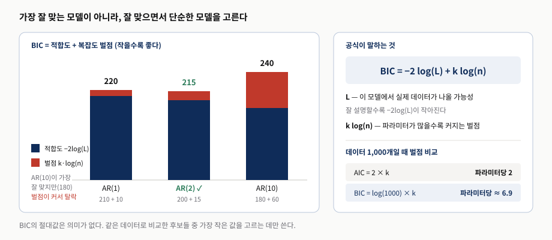
발표자 재구성. 적합도·벌점 숫자는 원리를 보이기 위해 잡은 값이며 교재의 실제 BIC 값이 아니다. 막대의 남색이 적합도, 붉은색이 복잡도 벌점이다.| 항목 | AIC (Akaike Information Criterion) | BIC (Bayesian Information Criterion) |
|---|---|---|
| 벌점 | $2k$ | $k\log(n)$ |
| 데이터 1,000개일 때 | 파라미터당 2 | 파라미터당 ≈ 6.9 |
| 이론적 배경 | 정보이론 | 베이즈 정리의 근사 |
| 성향 | 복잡한 모델에 관대 · 예측 성능 중시 | 보수적 · 단순하고 해석 가능한 모델 선호 |
표 7이 보여 주듯 BIC는 AIC보다 훨씬 보수적이다. 이름에 Bayesian이 붙은 이유는 이렇다. $P(\text{모델} \mid \text{데이터})$를 제대로 구하려면 계수마다 확률분포를 가정하고 모든 값을 적분해야 하는데 계산량이 폭발한다. 1978년 Schwarz는 데이터가 충분히 많다면 이 적분을 간단히 근사할 수 있음을 보였고, 그 결과가 BIC 공식이다. 복잡도 벌점이 생기는 것도 자연스럽다 — 파라미터가 많다는 것은 설명할 수 있는 경우의 수가 많다는 뜻이고, “그렇다면 정말 훨씬 잘 설명해야만 뽑겠다”는 판단이 $k\log(n)$으로 나타난다.
3.5 왜 로그가격인가
가격 수준이 다른 종목을 비교할 때 절대 차이는 오해를 부른다. 10달러 → 11달러는 10% 상승이고 100달러 → 101달러는 1% 상승인데, 차이는 둘 다 1달러다. 로그를 쓰면 비율이 자연스럽게 다뤄지고, 변동성도 가격 수준과 무관하게 비교할 수 있다. 유도는 두 줄이다. $P_t = P_{t-1}(1 + R_t)$에서 $\log(P_t / P_{t-1}) = \log(1 + R_t)$이고, $\log(1+x) \approx x$를 쓰면 로그수익률이 일반 수익률과 거의 같아진다.
| 일반 수익률 $R$ | 로그수익률 $\log(1+R)$ | 차이 |
|---|---|---|
| +1% | 약 +0.995% | 거의 같다 |
| +2% | 약 +1.980% | 여전히 작다 |
| +10% | 약 +9.531% | 눈에 띄기 시작 |
| +50% | 약 +40.547% | 크게 벌어진다 |
| −1% | 약 −1.005% | 음수에서도 성립 |
| −10% | 약 −10.536% | 하락 쪽이 더 빨리 벌어진다 |
| −50% | 약 −69.315% | 근사가 무너진다 |
표 8에서 놓치기 쉬운 지점이 있다. “$R$이 작으면”이라는 표현은 −1이 0.01보다 작다는 의미의 작음이 아니다. 근사가 성립하는 조건은 $|R|$이 0에 가깝다는 것이다. $y = \log(1+x)$는 정의역이 $x > -1$이고 원점에서 기울기가 정확히 1이라 그 근처에서만 $y = x$와 겹친다. $x$가 −1에 가까워지면 음의 무한대로 발산한다. 연습문제 3.7이 “가격 대신 로그가격으로 VAR·VEC를 다시 해 보라”고 요구하는 배경이 이것이다.
4. VAR(p) — 이웃 종목을 함께 본다
- VAR은 계수를 $m \times m$ 행렬로 올려 여러 종목을 동시에 예측한다. 대각선은 자기 영향, 나머지는 이웃 영향이다.
- 잡음에 건 조건이 둘이다 — 같은 시점의 종목 간 상관은 허용하고, 시점을 가로지르는 상관은 금지한다.
- 교재는 이를 컴퓨터 하드웨어 주식 바스켓에 적용하고 섹터 중립 배분으로 전략을 만든다.
- 결과는 연율 48%, 샤프 0.9. 샤프 0.9는 등락이 상당하다는 뜻이기도 하다.
- Chan(2013)의 식 4.1과 비슷해 보이지만 다르다 — 전일 수익률이 아니라 예측 수익률을 쓰고, 부호를 뒤집지 않는다.
AR(p)는 $m$개의 다변량 시계열로 쉽게 일반화된다. 이것이 벡터 자기회귀 모델 VAR(p)다. 할 일은 두 가지뿐이다 — 자기회귀 계수 $\phi$를 $m \times m$ 행렬로 해석하고, $m$차원 벡터인 잡음 $\varepsilon(t)$이 횡단면 상관은 가질 수 있되 시계열 상관은 갖지 않도록 두는 것이다. 계수 행렬이 각 시계열의 현재 가격을 모든 시계열의 과거 가격과 연결하므로, VAR는 같은 산업군의 주식 포트폴리오처럼 수익률이 서로 얽힌 상품에 특히 잘 맞는다.
교재가 고른 대상은 2007년 1월 3일 당시 S&P 500의 컴퓨터 하드웨어 그룹 — AAPL, EMC, HPQ, NTAP, SNDK다. 데이터는 2007-01-03부터 2013-12-31까지 CRSP가 제공한 장 마감 시점의 중간가격이다. 마지막 체결가를 쓰지 않은 이유는 분명하다 — 어제는 매도호가 100.02에, 오늘은 매수호가 99.98에 체결되면 중간가격이 100.00에 붙박여 있어도 체결가만 보면 강한 평균회귀처럼 보인다. 호가 반동이 만드는 허위 평균회귀를 걷어내려는 선택이다.
4.1 행렬로 올린다는 것
AAPL만 보는 AR(1)은 $AAPL_t = c + \phi\,AAPL_{t-1} + \varepsilon_t$다. VAR(1)은 여기에 이웃을 넣는다.
계수를 행렬로 묶으면 $\begin{bmatrix} 0.7 & 0.2 \\ 0.1 & 0.8 \end{bmatrix}$가 되고, 대각선은 자기 자신의 영향, 대각선 밖은 다른 종목의 영향이다. 같은 산업 종목이 잘 맞는 이유는 공통 요인 때문이다. 반도체 가격, PC 수요, 환율, 공급망이 함께 작용하므로 한 종목이 먼저 움직이고 나머지가 뒤따르는 패턴이 생길 수 있다. AR은 종목을 따로 보므로 이런 관계를 놓친다.
잡음에 건 두 조건도 같은 맥락이다. 오늘 반도체 업종에 좋은 뉴스가 나오면 AAPL 오차 +2%, HPQ 오차 +1.5%처럼 같은 날 여러 종목이 함께 예상 밖으로 움직일 수 있고, 이것은 허용한다. 반면 월요일 AAPL의 예상 밖 움직임과 화요일 HPQ의 예상 밖 움직임이 체계적으로 연결되어 있다고는 보지 않는다. 이유가 중요하다 — 어제의 정보가 오늘에 미치는 영향은 $\Phi Y_{t-1}$ 항이 이미 설명해야 하고, 오차는 남은 새로운 충격이어야 한다. 오차가 시간적으로 연결된다면 모델이 과거 정보를 덜 쓴 것이다.
| 종목 | 상수 오프셋 $\mu_i$ | 자기 계수 $\Phi_{ii}$ | 잡음 분산 $\langle \varepsilon_i^2 \rangle$ |
|---|---|---|---|
| AAPL | 3.88363 | 0.991815 | 36.2559 |
| EMC | 0.669367 | 0.970934 | 0.256786 |
| HPQ | 1.75474 | 0.965626 | 1.41323 |
| NTAP | 1.701 | 1.00662 | 1.70138 |
| SNDK | 1.8752 | 0.998657 | 2.17779 |
먼저 $p$부터 정해야 한다. AR(p)와 같은 방식으로 vgxset·vgxvarx·vgxcount를 돌려 BIC를 최소화하면 $p = 1$이 나온다. 더 단순한 모델이 좋으니 반가운 결과이고, 교재에 따르면 대부분의 산업군에서 나타나는 전형적인 결과다.
for p = 1:length(P)
model = vgxset('n', size(mid,2), 'nAR', p, 'Constant', true);
[model, EstStdErrors, logL, W] = vgxvarx(model, mid(trainset, :));
[NumParam, ~] = vgxcount(model);
LOGL(p) = logL; P(p) = NumParam;
end표 9에서 아래첨자는 표 3.1·3.2와 달리 시차가 아니라 종목을 가리킨다. 그리고 눈여겨볼 것은 자기 계수 $\Phi_{ii}$가 다섯 종목 모두 1에 붙어 있다는 점이다 — 0.9656에서 1.0066 사이다. 가격이 랜덤 워크에 가까우면 나오는 전형적인 모습이고, 그러면 “오늘이 어제와 거의 같다”는 당연한 말만 남는다. 이 불편함이 다음 절 VEC를 부르는 직접적인 이유다.
표에 싣지 않은 비대각 원소들은 훨씬 작다. 예컨대 AAPL 행은 EMC 0.0736, HPQ −0.1057, NTAP 0.0360, SNDK −0.0062로, 이웃 종목의 영향이 자기 자신의 0.9918에 비하면 미미하다. 잡음 공분산의 비대각도 0이 아니다 — 예컨대 AAPL–SNDK가 4.39542로, 같은 날 함께 튀는 것을 허용한다는 조건이 수치로 드러난 자리다. 표본외 예측에는 forecast에 대응하는 vgxpred를 쓴다.
4.2 섹터 중립이 식에서 나오는 방식
매일 산업군 안 모든 주식의 평균 예측 수익률 $\langle r \rangle$을 구한 뒤, 각 주식의 배분을 “예측 수익률이 평균에서 얼마나 벗어났는가”에 비례하도록 잡는다. 분모의 절댓값 합으로 나누므로 포트폴리오의 초기 총 시장가치가 항상 1이 된다.
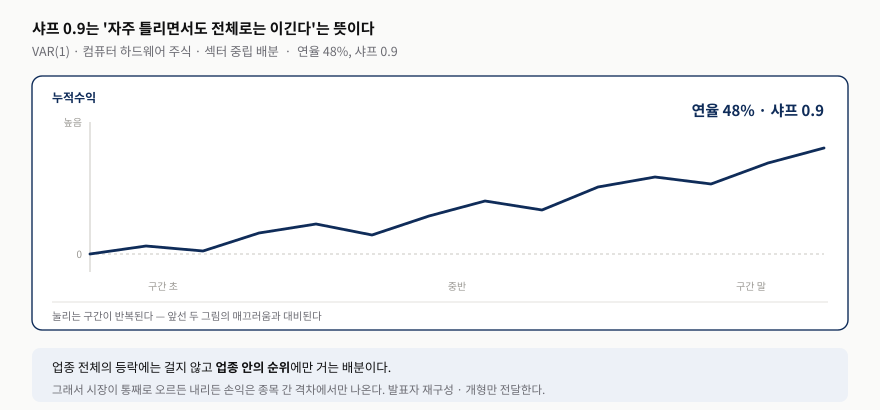
발표자 재구성 — 교재가 본문에서 밝힌 연율 48%·샤프 0.9와, 샤프 0.9가 함의하는 등락의 개형만 옮겼다.샤프 0.9라는 숫자를 그림 3.1·3.2와 나란히 놓으면 성격이 드러난다. 앞의 두 곡선은 거의 되돌림 없이 매끄럽지만 — 그래서 오히려 체결 가정을 의심하게 만들지만 — 이 곡선은 눌리는 구간이 반복된다. 실전 곡선에 가깝다는 뜻이다.
4.3 숫자로 따라가는 섹터 중립
예측수익률이 AAPL +2%, HPQ +1%, NTAP −1%라면 업종 평균은 0.667%다. 평균을 빼면 +1.333, +0.333, −1.667이고 이 셋의 합은 0이다. 절댓값 합 3.333으로 나누면 +40%, +10%, −50%가 된다. 1억 원이면 AAPL 4,000만 매수, HPQ 1,000만 매수, NTAP 5,000만 공매도 — 매수와 공매도가 같아 순노출이 0이다.
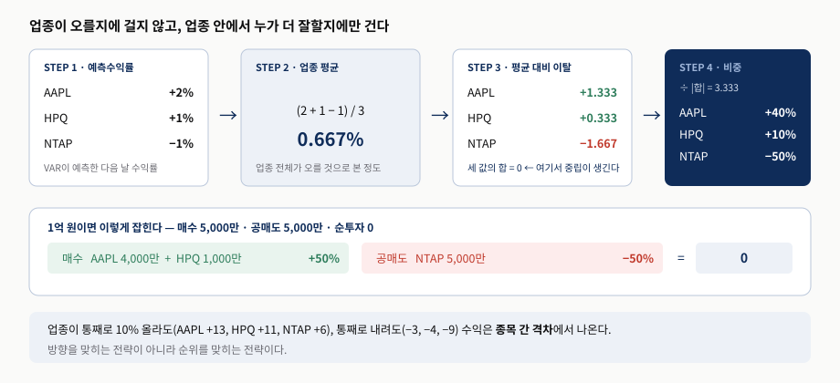
발표자 재구성. 3단계에서 이탈의 합이 0이 되는 것이 중립성의 출처다.그림 8의 3단계가 핵심이다. 중립성은 별도로 부과한 제약이 아니라 평균을 빼는 순간 식에서 자동으로 따라 나온다. 업종이 통째로 10% 올라 AAPL +13%, HPQ +11%, NTAP +6%가 되어도, 통째로 내려 −3%, −4%, −9%가 되어도 수익은 종목 간 격차에서 나온다. 방향을 맞히는 전략이 아니라 순위를 맞히는 전략이다.
코드로 보면 세 줄이다. 예측수익률을 구하고, 날짜별 업종 평균을 빼고, 절댓값 합으로 나눈다.
retF = (yF - mid) ./ mid; % 예측수익률
sectorRetF = mean(retF, 2); % 날짜별 업종 평균
positions = (retF - sectorRetF) ./ sum(abs(retF - sectorRetF), 2);마지막 정규화 덕분에 포지션 절댓값의 합, 즉 총시장가치(gross market value)가 항상 1이 된다. 앞의 예에서 +0.40, +0.10, −0.50이면 절댓값 합이 정확히 1이고, 1억 원을 굴린다면 매수 5,000만·공매도 5,000만이 된다. 순투자금은 0이지만 실제로 움직이는 돈은 1억이라는 뜻이다.
교재가 Chan(2013)의 식 4.1과 다르다고 못박은 이유도 여기서 보인다. 이전 저서의 공식은 전일 실현 수익률을 썼고 평균회귀를 가정해 비례상수를 −1로 놓았다 — 전날 많이 오른 종목을 공매도하는 구조다. 여기서는 예측 수익률을 그대로 쓰고 부호도 뒤집지 않으니 비례상수가 +1이다. 모델이 예측을 담당하므로 방향을 미리 정해 둘 필요가 없어진 것이다.
5. VEC(q) — 변화량을 예측하되 수준도 본다
- 거래에서 궁금한 것은 “내일 얼마인가”보다 “얼마나 변할까”다. 그래서 $\Delta Y$를 종속변수로 둔다.
- VEC는 새 모델이 아니다. VAR 양변에서 $Y(t-1)$을 빼면 $C = \Phi - I$로 그대로 유도된다.
- 여기서 ‘오차’는 예측 실패가 아니라 수준에서 벗어난 정도다. 그것을 되돌리는 힘을 담았다고 해서 $C$를 오차수정 행렬이라 부른다.
- 표 3.4의 대각 원소가 음수면 자기 수준으로 되돌아가려는 힘이다 — 다만 그것만으로 공적분이 증명되지는 않는다.
일반 VAR은 가격 수준을 예측한다. 그러면 매매 신호를 만들려고 다시 $\Delta Y_t = Y_t - Y_{t-1}$를 계산해야 하니 돌아가는 셈이다. 게다가 $A_t = 0.8A_{t-1} + 0.4B_{t-1}$에서 0.4가 큰 영향인지 작은 영향인지는, A가 200달러이고 B가 30달러라면 바로 판단하기 어렵다. VEC는 종속변수를 변화량으로 바꿔 이 두 불편을 한 번에 없앤다.
이 식의 핵심은 $Y(t-1)$ 앞에 붙은 $m \times m$ 행렬 $C$다. 교재는 이것을 오차수정 행렬(error correction matrix)이라 부른다. 어제의 가격 수준 $Y(t-1)$이 오늘의 가격 변화 $\Delta Y(t)$를 어느 방향으로 얼마나 끌어당기는지를 담고 있어서, “수준에서 벗어난 오차를 되돌리는” 힘을 나타낸다는 뜻이다. 두 독립변수의 역할도 여기서 갈린다 — 과거 변화량은 최근 단기 움직임(모멘텀인가 되돌림인가)을, 과거 가격 수준은 그 끌어당기는 힘을 나타낸다.
| 종목 | 대각 원소 $C_{ii}$ | 읽는 법 |
|---|---|---|
| AAPL | −0.0082 | 어제 수준이 높으면 오늘 내려가려는 힘 |
| EMC | −0.0291 | 같은 방향, 조금 더 강하다 |
| HPQ | −0.0344 | 다섯 중 되돌림이 가장 강하다 |
| NTAP | +0.0066 | 부호가 반대 — 지속성·약한 추세로 읽힌다 |
| SNDK | −0.0013 | 음수지만 거의 0에 가깝다 |
표 10를 정확히 읽으면 “모두 음수”가 아니라 “NTAP를 제외한 모든 대각 원소가 음수”다. 교재의 해석은 이렇다 — 음수라는 것은 그 주식이 자기 자신에 대해 평균회귀적이라는 뜻이고, “어제 오른 만큼 오늘 되돌린다”는 힘이 작동한다는 신호다. NTAP만 부호가 반대라 추세를 그린다. 다만 SNDK의 −0.0013처럼 그 정도가 아주 약한 경우도 있다.
표 3.3의 자기 계수에서 1을 빼면 표 3.4의 대각 원소가 그대로 나온다. VEC가 새 모델이 아니라 VAR를 다시 쓴 것이라는 사실이 숫자로 드러나는 자리다.
- AAPL — 0.991815 − 1 = −0.0082
- EMC — 0.970934 − 1 = −0.0291
- HPQ — 0.965626 − 1 = −0.0344
- NTAP — 1.00662 − 1 = +0.0066 · 1보다 컸으므로 부호가 뒤집힌다
- SNDK — 0.998657 − 1 = −0.0013
표 3.3에서 “대각이 전부 1 근처”라 읽기 어렵던 정보가, 1을 빼는 순간 되돌아오는가 이어가는가라는 해석 가능한 값으로 바뀐다. VEC를 쓰는 이유가 바로 이것이다.
그리고 대각이 음수라는 사실만으로 공적분이 증명되지는 않는다. 요한센 검정은 결정론적 항, 시차, 표본기간 선택에 민감하며, 예측을 위해 VEC를 쓰는 데 공적분이 반드시 필요한 것도 아니다.
5.1 ‘오차수정’이라는 이름
여기서 ‘오차’는 모델이 틀렸다는 뜻이 아니다. 가격 수준이 기준에서 벗어난 정도다. 두 가격이 A ≈ 2B로 안정적으로 묶여 있다고 하자. A가 110, B가 50이면 벗어난 정도는 +10이고, 계수 −0.2를 곱하면 $\Delta A = -2$가 되어 A가 내려간다. 반대로 A가 90, B가 50이면 −10이라 $\Delta A = +2$로 A가 올라간다. 같은 식이 양방향으로 되돌린다 — 교재의 표현대로 “어제 오른 만큼 오늘 되돌린다”는 힘이다.
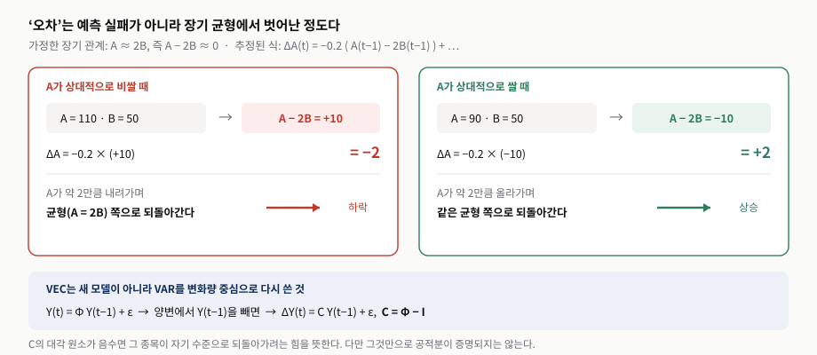
발표자 재구성. 계수 −0.2는 되돌림의 세기를 보이기 위해 잡은 값이다. 두 경우 모두 같은 식에서 벗어난 방향만 다르다.주의할 점이 하나 있다. $Y_{t-1}$ 자체가 $A_{t-1} - 2B_{t-1}$인 것이 아니다. $Y_{t-1}$은 두 가격을 담은 벡터이고, $C$의 한 행 $[-0.2,\ 0.4]$를 곱하면 $-0.2A_{t-1} + 0.4B_{t-1} = -0.2(A_{t-1} - 2B_{t-1})$이 되는 것이다. 그 조합은 C가 만든다. 그래서 표 3.4를 볼 때 대각 원소만이 아니라 행 전체를 함께 보아야 한다. 실제 AAPL 행은 $[-0.0082,\ 0.0736,\ -0.1057,\ 0.0360,\ -0.0062]$이고, 이 다섯 값의 조합이 “다섯 종목의 가격 수준이 오늘의 변화를 어느 방향으로 끌어당기는가”를 만든다.
5.2 요한센 검정과의 관계, 그리고 공적분이 없어도 되는 이유
식 3.5는 Chan(2013)의 식 2.7과 똑같은데, 그곳에서는 공적분에 대한 Johansen 검정과 연결해 다뤘다. 교재의 문장은 이렇다 — 실제로 컴퓨터 하드웨어 주식 포트폴리오가 공적분한다면 $C$는 Johansen 검정에서 유의하게 음수인 고윳값을 만들어 낼 것이다. 여기서 공적분이란 여러 가격이 제각기 떠돌아도 어떤 조합은 안정적으로 묶여 있는 관계를 말한다.
그러나 예측을 위해 VEC(q)를 쓰는 데 공적분 포트폴리오가 꼭 필요한 것은 아니다. 표 3.4에서 보았듯 어떤 주식은 추세를 그리고 어떤 주식은 평균회귀하는 뒤섞인 상태여도 상관없다. 공적분 검정은 안정적으로 묶인 조합이 실제로 존재하는지를 확인하는 용도이고, VEC는 다음 변화를 예측하는 모델이다.
표준 Johansen 검정은 “음수인 고윳값이 하나 있는가”를 보는 검정이 아니다. VEC에서 얻은 고윳값으로 trace 통계량과 최대고윳값 통계량을 계산하고 임계값과 비교해 공적분 순위를 정한다. 교재의 문장은 $C$의 평균회귀적 성질을 직관적으로 표현한 것으로 읽는 편이 좋다.
덧붙이면 계량경제학 문헌은 $C = \alpha\beta^{\top}$로 분해해 $\beta^{\top}Y_{t-1}$을 장기 균형에서 벗어난 정도, $\alpha$를 조정 속도라 부르기도 한다. 다만 교재 3장은 이 용어를 쓰지 않는다. 그리고 그 이름은 공적분이 성립할 때만 엄밀하다 — 공적분이 없으면 되돌아갈 균형이 실재하지 않으므로, 그때의 $C\,Y(t-1)$은 교재의 표현대로 “어제의 수준이 오늘의 변화를 끌어당기는 힘”으로 읽는 편이 정확하다. 표 3.4의 NTAP(+0.0066)가 그 예다.
마지막으로 규모에 관한 현실적인 단서 하나. 컴퓨터 하드웨어 다섯 종목이 아니라 S&P 500 전 종목에 VAR를 적용하려면 메모리부터 확인해야 한다. 종목이 $m$개면 계수 행렬이 $m^2$로 불어나기 때문이다. 그리고 이 모델들은 가격보다 로그가격에서 더 잘 작동하는 경우가 많고, 로그가격으로 두면 VAR·VEC의 연속시간 버전과도 자연스럽게 이어진다. 연습문제 3.7이 바로 이것을 확인하라고 요구한다.
6. 상태공간 모델 — 보이지 않는 것을 추정한다
- 이동평균의 기간은 사람이 임의로 정한다. 그렇다면 진짜 추세를 은닉 변수로 두고 데이터가 정하게 하자는 발상이다.
- 식이 둘이다 — 상태전이는 보이지 않는 상태가 어떻게 흘러가는지, 측정은 그것이 관측값에 어떻게 드러나는지를 말한다.
- 잡음도 둘이다. $B$가 상태 잡음의 크기를, $D$가 측정 잡음의 크기를 정한다.
- 표 3.5에서 비대각 원소를 0으로 둔 것이 이 모델의 핵심 제약이다.
- 학습 구간(그림 3.4)과 테스트 구간(그림 3.5)의 대비가 이 장 전체의 결론이다.
6.1 은닉 변수라는 발상
주가가 100, 102, 101, 105, 104일 때 “현재 추세”는 얼마인가? 3일 이동평균은 103.33, 5일은 102.4, 지수이동평균은 103.5다. 어느 것이 진짜인가? 3일·5일·20일이라는 기간은 사람이 임의로 정한 것이므로 객관적인 정답이 없다. 이 사실 자체가 이동평균을 관측되지 않는 변수로 취급해도 좋다는 신호다.
앞 식은 보이지 않는 상태가 어떻게 흘러가는지를, 뒤 식은 그 상태가 우리가 보는 값에 어떻게 드러나는지를 말한다. 숫자로 보면 이렇다. $x(t-1) = 100$이고 $x(t) = 0.9x(t-1) + 2u(t)$에 $u(t)=1$이면 $x(t) = 92$다. 여기에 관측 잡음이 붙어 $y(t) = 92 + 3(1) = 95$가 된다. 우리가 시장에서 본 95 안에 숨은 92가 있다고 보는 것이다.
여기서 앞의 네 모형과 갈라진다. AR·ARMA는 자기 과거값과 과거의 예측오차를, VAR는 다른 종목의 과거값까지, VEC는 어제의 가격 수준이 끌어당기는 힘을 본다. 그러나 이들이 쓰는 변수는 모두 이미 관측된 값이다. 상태공간 모델은 한 걸음 더 간다 — 관측가격 = 숨겨진 상태 + 잡음으로 나누고, 그 숨겨진 상태를 먼저 추정한다. 관측가격이 103이라면 숨은 추세가 101이고 일시적 잡음이 +2였을 수 있다는 식이다.
6.2 칼만 필터 — 예측하고, 비교하고, 수정한다
먼저 용어를 정리해 두자. 칼만 필터는 상태공간 모델 자체가 아니다. 선형·가우시안 상태공간 모델에서 숨겨진 상태를 추정하는 알고리즘이다. 모델이 구조를 정의하면, 필터가 매 시점 그 구조 안에서 상태를 갱신한다. 절차는 세 단계다.
① 예측한다. 어제 추정한 숨은 추세가 $\hat{x}_{t-1} = 100$이라면, 오늘 관측을 보기 전의 사전 예측도 우선 $\hat{x}_{t|t-1} = 100$이다.
② 비교한다. 오늘 실제 관측가격이 $y_t = 104$라면 차이는 $104 - 100 = 4$다. 이 차이를 혁신(innovation), 곧 새로 들어온 정보라고 부른다 — ARMA의 MA 항에서 만난 그 $\varepsilon$과 같은 이름이다.
③ 수정한다. 혁신을 얼마나 반영할지는 칼만 이득 $K_t$가 정한다.
$K_t = 0.25$라면 $\hat{x}_t = 100 + 0.25(104 - 100) = 101$이다. 관측은 104였지만 필터가 추정한 숨은 추세는 101이다 — 나머지 3은 잡음으로 본 것이다.
$K_t$는 “오늘 관측을 얼마나 믿을 것인가”를 정한다. 그리고 그 값을 정하는 것이 바로 다음에 나올 $B$와 $D$다.
- 관측잡음 $D$가 크면 — 가격이 시끄럽다고 보아 $K$가 작아지고, 관측을 덜 반영한다
- 상태잡음 $B$가 크면 — 추세 자체가 잘 변한다고 보아 $K$가 커지고, 새 관측을 더 반영한다
즉 이전 추정값과 새 관측값을 각자의 불확실성에 따라 자동으로 가중한다. 5일선·20일선처럼 사람이 기간을 정하는 이동평균과 결정적으로 다른 점이다.
교재가 다루는 이동평균 모형은 여기서 한 번 더 단순해진다. $A = I$, $C = I$로 두어 $x_t = x_{t-1} + Bu_t$, $y_t = x_t + D\varepsilon_t$가 된다. 추세는 그대로 이어지고 관측은 추세에 잡음만 얹힌 형태다. 학습 구간에서 추정하는 것은 결국 $B$와 $D$뿐이고, 필터링 과정에서는 이 둘을 고정해서 쓴다.
6.3 다섯 종목에 다섯 개의 숨은 추세
VAR 절에서 쓴 컴퓨터 하드웨어 다섯 종목에 그대로 적용한다. 숨은 상태변수도 종목 수와 같은 다섯 개를 둔다 — 일반적인 이동평균에서도 각 시계열이 자기만의 이동평균을 갖는 것과 같은 가정이다.
그리고 한 이동평균의 상태잡음은 다른 이동평균의 상태잡음과 상관이 없되 각자 다른 분산은 가질 수 있다고 둔다. 그래서 $B$는 미지 모수를 가진 $5 \times 5$ 대각행렬이다. 측정잡음도 같은 방식으로 $D$ 역시 대각행렬이 된다. 이 0 상관 제약을 풀 수도 있었지만, 그러면 추정할 변수가 크게 늘어 최적화 시간이 길어지고 과적합 위험도 함께 커진다.
A = eye(size(y,2)); % 상태전이행렬
B = diag(NaN(size(y,2), 1)); % 미지 모수는 NaN
C = eye(size(y,2)); % 시간불변 측정행렬
D = diag(NaN(size(y,2), 1));
model = ssm(A, B, C, D);
param0 = randn(2*size(B,1)^2, 1);
model = estimate(model, y(trainset, :), param0);이 코드가 만들어 낸 값이 표 3.5다. 가우시안 잡음 가정을 더 그럴듯하게 하려면 가격 대신 로그가격에 상태공간 모델을 적용하는 것도 고려할 수 있다.
6.4 필터링에서 매매 신호까지
두 방정식이 정해지면 filter 함수로 상태와 관측 양쪽의 예측값을 얻는다. x(t)는 시점 $t$까지의 가격을 보고 추정한 필터링된 가격, 곧 이동평균이다.
[x, logL, output] = filter(model, y);
for t = 1:length(output)
yF(t, :) = output(t).ForecastedObs';
end
retF = (yF - y) ./ y; % 예측수익률여기서 눈에 띄는 결과가 하나 있다. 필터링 가격이 관측가격과 거의 같다 — 차이가 대개 0.1% 미만이다. 왜 그런지는 식에서 바로 나온다. $x_{t+1} = x_t + Bu_{t+1}$이고 $\mathbb{E}[u_{t+1}] = 0$이므로 $\mathbb{E}[x_{t+1} \mid t] = x_t$다. 따라서 $\hat{y}_{t+1} \approx x_t \approx y_t$, 곧 “내일 가격은 오늘의 추세가격과 비슷하다”가 이 단순 모형의 기본 예측이다.
그래도 종목마다 예측수익률은 조금씩 다르게 나오고, 그 차이가 신호가 된다. 오늘 100에 내일 예측이 100.3이면 $\hat{r} = 0.3\%$다. 다섯 종목의 예측수익률을 구한 뒤 VAR 절과 똑같은 방식으로 섹터 중립 배분을 만든다 — 업종 평균보다 강한 종목은 매수, 약한 종목은 공매도. yF(t)를 $t-1$에 할당하는 규약도 앞과 같아서, retF(t)는 $t-1$에서 $t$까지의 예측수익률이다.
| 종목 / 상태 | $B_{ii}$ — 상태잡음 크기 | $D_{ii}$ — 측정잡음 크기 |
|---|---|---|
| $x_1$ · AAPL | −3.74 | −0.0000454 |
| $x_2$ · EMC | 0.34 | −0.08 |
| $x_3$ · HPQ | −0.73 | 0.22 |
| $x_4$ · NTAP | −0.67 | 0.19 |
| $x_5$ · SNDK | −1.00 | −0.15 |
부호는 읽지 않아도 된다. 잡음 $u(t)$와 $\varepsilon(t)$가 평균 0을 중심으로 대칭이고 서로 교차상관도 없으므로, 대각 원소의 부호에는 의미가 없다 — 중요한 것은 크기다. 그렇게 보면 AAPL이 눈에 띈다. 상태잡음 3.74에 측정잡음이 사실상 0이니, 필터가 관측을 거의 그대로 믿는다는 뜻이다. 반대로 EMC는 상태잡음 0.34에 측정잡음 0.08로 둘 다 작다.
표 11의 괄호 안 단서 “비대각 원소는 0”이 그냥 지나칠 대목이 아니다. 이것은 데이터에서 나온 결과가 아니라 추정 전에 사람이 건 제약이다. 추정할 모수를 줄이려고 건 제약이고, 연습문제 3.6은 같은 제약을 $B$에 걸었을 때 결과가 어떻게 달라지는지를 묻는다.
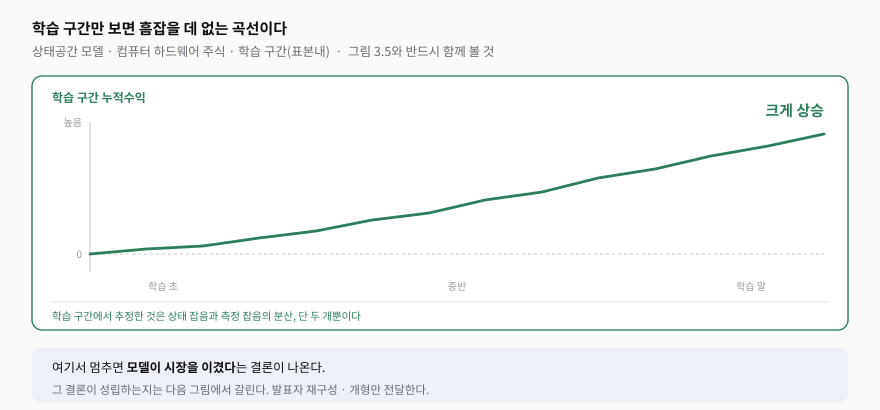
발표자 재구성 — 교재가 서술한 “학습 세트 누적 수익률”의 개형만 옮겼다. 예측 수익률로 섹터 중립 배분을 만드는 방식은 VAR 절과 동일하다.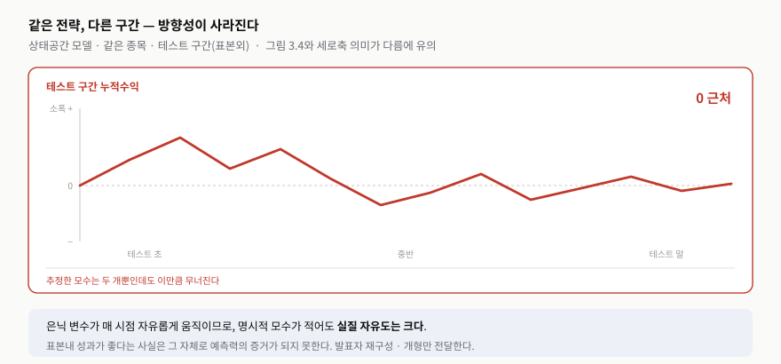
발표자 재구성 — 교재가 “과적합의 정도가 놀라울 만큼 크다”고 표현한 대비를 개형으로 옮겼다. 두 그림의 세로축 눈금이 다르다는 점에 유의한다.교재의 표현이 정확하다. “학습 데이터로는 그저 상태·측정 잡음의 분산만 추정했을 뿐인데도 과적합의 정도가 놀라울 만큼 크다.” 명시적으로 추정한 모수는 둘인데 결과는 무너진다. 이유는 은닉 변수 자체에 있다 — $x(t)$가 매 시점 자유롭게 움직일 수 있으므로 실질 자유도는 모수 개수보다 훨씬 크다.
6.5 두 잡음과 은닉 추세
| 구분 | $u(t)$ · 과정잡음 | $\varepsilon(t)$ · 측정잡음 |
|---|---|---|
| 흔드는 대상 | 진짜 상태 자체 | 관측하는 과정 |
| 예 | 예상 밖 실적, 기술 변화, 경영 결정 | 일시적 매수·매도 쏠림 |
| 크기를 정하는 것 | $B$ — 상태가 얼마나 흔들리는지 | $D$ — 관측이 얼마나 흔들리는지 |
| 왜 분산 1인가 | 잡음을 표준화하고 실제 크기는 $B$·$D$가 결정하게 하려고. $B=2$면 $2u(t)$의 분산은 4가 된다. | |
표 12의 마지막 줄이 표 11을 읽는 열쇠다. 잡음 자체는 분산 1로 표준화해 두고 실제 크기는 전부 $B$와 $D$에 몰아넣었기 때문에, 표 3.5의 값이 곧 “이 시장이 얼마나 흔들리는가”에 대한 모델의 추정치가 된다.
6.6 과적합의 크기를 눈으로 재기
학습 구간(2007–2010) 누적수익률은 약 2.3, 즉 230%다. 1억으로 시작했다면 최종 자산 약 3.3억이다. 그런데 테스트 구간(2010–2014)에서는 2011년 말 약 22%까지 올랐다가 하락해 2013년에는 −10%까지 내려가고, 마지막에는 뚜렷한 수익을 남기지 못한다.
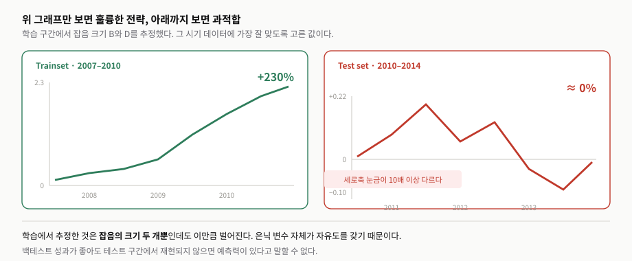
발표자 재구성. 같은 축으로 그리면 오른쪽 곡선이 거의 평평해 보이므로 눈금을 달리했고, 그 사실을 그림 안에 표시했다.그림 13이 그림 3.4·3.5에 숫자를 붙인 것이다. 세로축 눈금이 10배 이상 다르다는 사실을 그림 안에 표시한 이유가 있다 — 같은 축으로 그리면 테스트 곡선이 아예 보이지 않아서, 오히려 대비가 전달되지 않는다.
6.7 두 번째 예시 — 헤지비율을 은닉 상태로 둔다
같은 칼만 필터를 전혀 다른 문제에 쓴다. 앞의 예시에서 은닉 상태는 가격의 숨은 추세였는데, 이번에는 두 ETF 사이의 헤지비율이다. 요점을 미리 적어 두면 이렇다.
- 두 ETF의 관계를 $EWC_t = \beta_t EWA_t + \alpha_t + \text{잡음}$으로 보되, $\beta_t$와 $\alpha_t$를 매일 변하는 은닉 상태로 둔다.
- 그림 3.6·3.7이 그 추정값의 시간 변화다 — 헤지비율은 상수가 아니다.
- 진입·청산 신호는 예측 오차를 예측 표준편차와 비교해 만든다.
- 그림 3.8의 학습 곡선은 전반부부터 이미 평평해진다. 교재는 레짐 변화와 과적합 두 가지 해석을 나란히 둔다.
형태는 직선식 $y = mx + b$와 똑같다. 핵심은 기울기와 절편을 고정 상수가 아니라 은닉 상태로 둔다는 점이다. 측정행렬에 EWA를 넣는 방식이 재미있다 — $x_t = [\beta_t,\ \alpha_t]^{\top}$, $C_t = [EWA_t,\ 1]$로 두면 $C_t x_t = \beta_t EWA_t + \alpha_t$가 된다. 두 번째 자리의 1은 절편을 더하기 위한 것이다.
앞 절과 무엇이 달라졌는지부터 보자. 이동평균 사례에서 은닉 상태는 가격의 숨은 추세였다. 여기서는 $x_t = [\beta_t,\ \alpha_t]^{\top}$, 곧 헤지비율과 절편이다. 관측값 $y$도 가격 벡터가 아니라 EWC 하나인 스칼라이고, EWA는 관측이 아니라 시변 측정행렬 $C_t = [EWA_t,\ 1]$으로 들어간다. 같은 도구를 전혀 다른 문제에 쓴 것이다.
곱해 보면 식 하나로 정리된다 — $EWC_t = \beta_t EWA_t + \alpha_t + D\varepsilon_t$. 이 절의 모든 것이 여기서 나온다.
y = cl(:, idxC); % 관측은 EWC 하나
C = [cl(:, idxA) ones(size(cl,1), 1)]; % [EWA, 1]
A = eye(2); B = NaN(2); % B는 2x2 전체가 미지
C = mat2cell(C, ones(size(cl,1), 1)); % 시변 측정행렬
D = NaN;
trainset = 1:1250; % 2006-04-26 ~ 2012-04-09
model = ssm(A, B, C(trainset, :), D);왜 헤지비율이라 부르는가. $EWC_t \approx 0.8\,EWA_t + 2$라면 $EWC_t - 0.8\,EWA_t$가 2 근처에 머문다. EWC 1단위에 EWA 0.8단위를 반대로 잡으면 공통 시장 움직임이 상쇄된다는 뜻이다. 절편 $\alpha_t$는 그렇게 하고도 남는 기본적인 수준 차이다.
6.8 숫자로 따라가는 페어 트레이딩
어느 날 필터가 $\beta_t = 0.8$, $\alpha_t = 5$로 추정했고 그날 EWA가 50이라 하자. 모델이 보는 정상적인 EWC 가격은 $0.8(50) + 5 = 45$다. 실제 EWC를 이 값과 비교한 잔차가 신호가 된다.
- 실제 EWC가 45 → $e_t = 0$, 정상 관계. 거래할 이유가 없다
- 실제 EWC가 42 → $e_t = -3$, EWC가 상대적으로 싸다 → EWC 매수 · EWA 0.8단위 매도
- 실제 EWC가 48 → $e_t = +3$, EWC가 상대적으로 비싸다 → EWC 매도 · EWA 매수
여기서 $\beta_t$가 얼마나 반대로 잡을지를 알려 준다. 그리고 같은 잔차가 필터의 갱신에도 쓰인다 — 42가 관측되면 $\beta_t$는 0.80에서 0.79로, $\alpha_t$는 5에서 4.8로 조정되는 식이다. 같은 차이가 한쪽에서는 매매 신호가 되고 다른 쪽에서는 상태 수정에 쓰인다.
왜 굳이 칼만인가. 일반 회귀라면 $\beta = 0.8$ 하나로 고정된다. 하지만 두 ETF의 관계가 늘 같을 리 없다 — 0.75 → 0.80 → 0.90 → 0.70처럼 움직인다. 그래서 $\beta$에 $t$를 붙이고, 헤지비율 자체를 시장에 따라 변하는 은닉 상태로 본다.
6.9 표 3.6 — 이번에는 교차상관을 제약하지 않았다
학습 구간(1:1250, 2006-04-26 ~ 2012-04-09)에서 추정한 값은 이렇다.
표 3.5와 달리 상태잡음의 교차상관을 0으로 제약하지 않았다. $B$의 비대각이 살아 있으므로 상태 충격이 서로 섞인다.
$\omega_1$은 헤지비율 $\beta$를 흔드는 충격, $\omega_2$는 절편 $\alpha$를 흔드는 충격이다. $u_1$과 $u_2$가 서로 무상관이라고 두면 $\omega$의 공분산 행렬이 따라 나온다.
읽을 것이 셋이다. 헤지비율의 변동 분산은 0.00055로 아주 작고(천천히 움직인다), 절편의 분산은 0.27로 훨씬 크며(크게 움직인다), 둘 사이 공분산이 −0.011로 0이 아니다. Chan(2013)의 Box 3.1에서는 두 충격이 무상관이고 각 분산이 약 0.0001이라고 가정했는데, 여기서는 데이터로 추정하니 전혀 다른 그림이 나온 것이다. 측정잡음도 마찬가지다 — 임의로 0.001로 두는 대신 $D^2 = 0.0059$로 추정했다.
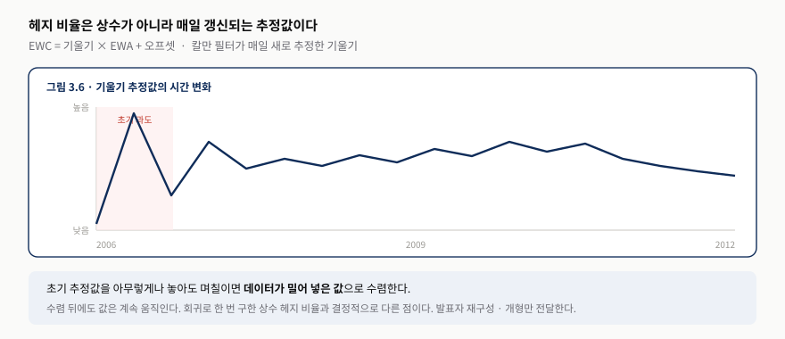
발표자 재구성 — 교재 그림의 수치를 옮기지 않고, 초기 과도 구간과 이후의 지속적 표류라는 두 가지 특징만 도식화했다.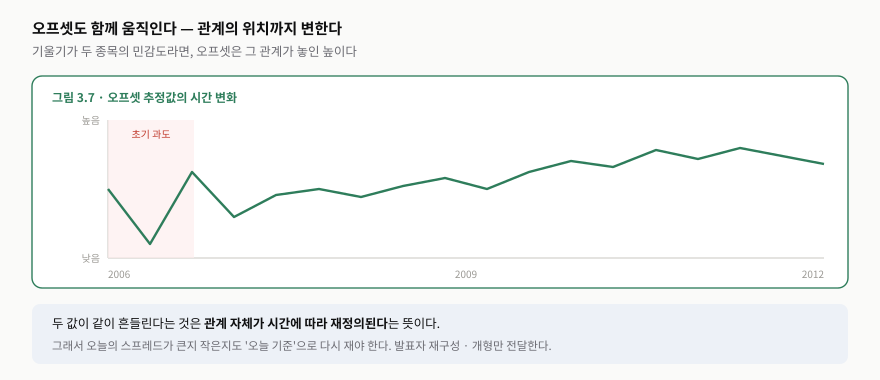
발표자 재구성 — 기울기와 오프셋이 함께 움직인다는 점, 즉 관계 자체가 시간에 따라 재정의된다는 점을 전달하기 위한 도식이다.그림 3.6의 세로축 Slope = x(t,1)이 바로 $\beta_t$다. 그래프는 하나의 고정된 숫자와 거리가 멀다 — 2006년 초에는 1.4를 넘었다가 2007년경 0.4까지 내려가고, 2009년에 다시 1.1 부근으로 올라온 뒤 이후로는 0.7~1.0 사이를 오간다. 일반 회귀라면 $\beta = 0.8$ 하나를 내놓았을 자리에, 칼만 필터는 구간마다 다른 값을 준다.
이 두 그림이 이 절의 존재 이유다. 회귀분석으로 한 번 구한 헤지비율은 상수 하나지만, 칼만 필터는 매일 새 값을 준다. 초기값을 아무렇게나 놓아도 며칠이면 데이터가 밀어 넣은 값으로 수렴하고, 그 뒤에도 계속 움직인다. 오늘의 스프레드가 큰지 작은지를 “오늘 기준”으로 다시 재야 한다는 뜻이다.
실제 신호는 예측 오차 $e = y - \hat{y}$를 예측 표준편차와 비교해 만든다. 오차가 $-\sqrt{\text{ymse}}$보다 작으면 EWC를 사고, $+\sqrt{\text{ymse}}$보다 크면 판다. 임계값이 고정 상수가 아니라 그날의 예측 불확실성에 따라 함께 움직인다는 점이 핵심이다. 포지션 결정 방식은 Chan(2013)과 같고 MATLAB 코드는 SSM_beta_EWA_EWC.m이다.
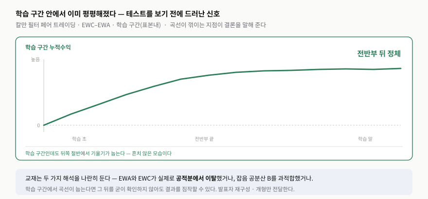
발표자 재구성 — 교재가 지적한 “학습 세트의 전반부에서부터 이미 곡선이 평평해지기 시작했다”는 특징을 개형으로 옮겼다.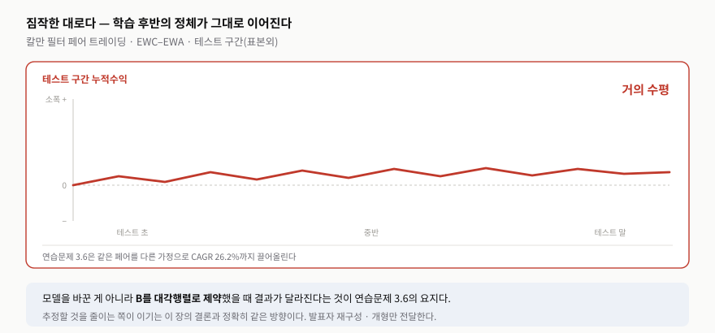
발표자 재구성 — 학습 구간 후반의 정체가 테스트 구간에서 그대로 이어진다는 관계를 보이기 위한 도식이다.숫자로 보면 격차가 분명하다. 학습 구간 누적수익률은 0에서 출발해 0.1 → 0.2 → 0.4를 거쳐 약 0.58, 곧 58%까지 오른다. 다만 2009년 이후로는 0.58 근처에서 거의 움직이지 않는다 — 학습 구간 후반부터 이미 수익 창출력이 식고 있었다는 뜻이다. 테스트 구간에서는 처음 +0.01까지 올랐다가 −0.038까지 내려가고 마지막은 −0.005 언저리, 사실상 수익이 없다.
학습 구간 안에서 곡선이 눕는 이유로 교재는 두 가지를 든다. ① EWA와 EWC가 실제로 공적분에서 이탈하는 레짐 변화(regime change)가 있었거나 — 그렇다면 “벌어지면 돌아온다”는 페어 트레이딩의 전제 자체가 무너진다 — ② 더 유력하게는 잡음 공분산 $B$를 과적합했거나. 후자라면 표 3.6의 네 값이 지속되는 시장 구조가 아니라 학습 기간의 잡음까지 맞춘 결과라는 뜻이다. 어느 쪽이든 “이 변수까지 추정해야 하는 상태공간 모델에서 과적합이 얼마나 집요한 위험인지”라는 같은 결론으로 모인다.
연습문제 3.6이 여기에 대한 처방이다. $B$를 대각행렬로 제약하면 CAGR 26.2%, 샤프 2.4가 나오는지 확인하라는 것 — 모델을 키우는 게 아니라 줄이는 방향이다.
7. 요약 — 이 장이 남긴 것
교재의 요약은 시계열 분석을 “새로운 금융상품이나 시장을 만났을 때 가장 먼저 시도해 볼 만한 기법”으로 자리매김한다. 직관도 펀더멘털도 없을 때 남는 것이 가격의 통계 구조이기 때문이다. AR·ARMA·ARIMA·VAR·VEC 그리고 상태공간 모델까지, 이 장이 다룬 여섯 모형은 모두 선형이라는 공통점을 갖는다.
그리고 교재는 곧바로 단서를 단다. 선형이라고 만만한 것이 아니다. 추정할 모수가 많아 과적합이 늘 따라다닌다. 특히 상태공간 모델은 자체 동역학을 가진 은닉 변수까지 품고 있어 위험이 가장 크다.
그래서 이 장의 실천적 결론은 하나로 모인다. 이 방법들로 전략을 만들려면 모수의 개수를 줄이고 될수록 강한 제약을 거는 것이 관건이다. ARMA와 VAR에서 시차를 1로 제한하는 것, 상태공간 모델에서 잡음의 교차상관을 0으로 두는 것 — 표 3.5의 “비대각 원소는 0”이 정확히 그 제약이다 — 이 모두 같은 방향의 선택이다. 그리고 제약을 거는 것 못지않게 중요한 것이 데이터를 늘리는 것이며, 그래서 교재는 데이터가 풍부한 일중(intraday) 트레이딩에서 이 방법들이 특히 유망하다고 본다.
7.1 토론 질문
- 체결 가능성 — 우리 환경에서 중간가격 체결을 전제할 수 있는 시장·상품이 있는가? 없다면 그림 3.1의 158%는 우리에게 어떤 숫자로 번역되는가?
- 제약의 선택 — 시차를 1로 제한하는 것과 잡음 교차상관을 0으로 두는 것 중, 우리 데이터에서 먼저 풀어 볼 만한 것은 무엇인가?
- 과적합 판정 — 그림 3.4와 3.5 정도로 학습·테스트가 갈리면 버린다는 기준을 미리 숫자로 정해 둘 수 있는가?
- 모델과 수익의 괴리 — ARMA(2, 5)가 AR(10)보다 통계적으로 낫지만 덜 벌었다. 우리는 무엇을 기준으로 모델을 고를 것인가?
연습문제 (Exercises)
교재의 연습문제 여덟 개는 본문에서 넘어간 지점을 정확히 겨냥한다. 아래는 각 문제가 본문의 어느 대목과 연결되는지를 함께 정리한 것이다.
- 3.1 — 식 3.1의 AR(1)에서 $Y(t)$가 약정상이면 $|\Phi| < 1$임을 보이시오(힌트: $Y(t)$의 분산). → 표 3.1의 $\phi_1$이 왜 1보다 작아야 하는지에 대한 근거다.
- 3.2 — 같은 .mat 데이터셋의 매수·매도 호가를 써서, 시장가 주문만 쓴다고 가정하고 AUD.USD 백테스트를 다시 하시오. CAGR은 얼마인가? → 그림 3.1의 158%가 중간가격 가정에 얼마나 기대고 있는지를 재는 문제다.
- 3.3 — 로그수익률의 ARIMA($p$, 0, $q$)와 로그가격의 ARIMA($p$, 1, $q$)가 같은 자기회귀 계수를 준다는 것을 확인하고, 최적 $p$, $q$가 1과 9임을 보이시오. → “수익률로 바꿔도 간결해지지 않는다”는 본문 주장의 확인이다.
- 3.4 — EWA와 EWC에 VAR를 적용해 예측 일간 수익률의 부호로 매수·매도 신호를 만드시오. 각 ETF를 항상 $1씩 거래할 때 CAGR과 샤프 비율은? 두 신호가 같은 부호를 갖는 때가 있는가? → 같은 페어를 VAR로 다루면 칼만 필터와 어떻게 다른지 비교하게 한다.
- 3.5 — 식 3.8·3.9로 생성한 이동평균에 가장 잘 맞는 $N$일 지수이동평균은? 더 큰 $N$을 강제하려면 $B$나 $D$에 어떤 제약을 걸어야 하는가? → 표 3.5의 제약이 결과를 어떻게 바꾸는지를 직접 다루게 한다.
- 3.6 — $B$를 대각행렬로 가정하면 2006-04-26 ~ 2012-04-09 구간에서 EWC 대 EWA 칼만 전략을 CAGR 26.2%, 샤프 2.4로 백테스트할 수 있는가?(Chan, 2013의 결과) → 그림 3.8·3.9의 부진이 제약 하나로 뒤집히는지 묻는다.
- 3.7 — 가격 대신 로그가격으로 컴퓨터 하드웨어 주식에 VAR와 VEC를 적용하시오. 표본외 수익률과 샤프 비율이 개선되는가? → 표 8의 로그 변환 논의를 표 3.3·3.4에 실제로 적용해 본다.
- 3.8 — 칼만 필터로 이동평균 대신 최근 추세의 기울기를 찾고, 그 기울기가 이어진다고 보고 추세추종 전략을 백테스트하시오. → 같은 도구를 평균회귀가 아니라 추세추종에 쓰면 어떻게 되는지 보는 문제다.
핵심 용어
| 용어 | 의미와 이 장에서의 쓰임 |
|---|---|
| 정상성 | 평균·분산 같은 통계적 성질이 시간이 흘러도 변하지 않는 성질. 가격은 대개 비정상, 수익률은 대개 정상이다. |
| 공적분 | 여러 가격이 제각기 떠돌아도 어떤 조합은 안정적으로 묶여 있는 관계. 페어 트레이딩의 근거이며, Johansen 검정으로 확인한다. |
| 약정상 / 강정상 | 약정상은 평균·분산·공분산만 일정하면 된다(주석 1). 강정상은 분포 전체가 같아야 한다. 실무의 stationary는 거의 약정상이다. |
| φ (자기회귀 계수) | 어제의 편차가 오늘로 얼마나 이어지는지. 1보다 작으면 평균회귀, 1이면 랜덤 워크, 크면 발산. |
| 랜덤 워크 | 가격 수준이 랜덤한 것이 아니라 변화량이 랜덤한 것. 오늘 가격이 내일의 출발점이 된다. |
| 매수–매도 호가 반등 (bid–ask bounce) | 주문 방향 때문에 체결가가 Bid와 Ask 사이를 튀는 현상. 가짜 평균회귀를 만든다. |
| 중간가격 | (최고 매수호가 + 최저 매도호가) / 2. 본문 AR(10)·ARMA(2, 5)가 쓴 가격이며, 연습문제 3.2가 이 가정을 검증한다. |
| 우도 $L$ | 이 모델에서 실제 관측 데이터가 나왔을 가능성. 로그를 씌우고 −2를 곱해 “작을수록 좋은” 점수로 만든다. |
| BIC | $-2\log(L) + k\log(n)$. 적합도와 복잡도 벌점의 합. AR(10)의 10, ARMA(2, 5)의 2와 5를 고른 기준이다. |
| 섹터 중립 | 업종 평균 대비 이탈에 비례해 배분해 매수액과 공매도액을 같게 만드는 방식. VAR 절과 상태공간 절이 같은 방식을 쓴다. |
| 오차수정 행렬 $C$ | 어제의 가격 수준 $Y(t-1)$이 오늘의 가격 변화 $\Delta Y(t)$를 어느 방향으로 얼마나 끌어당기는지. “수준에서 벗어난 오차를 되돌리는” 힘이라 이 이름이 붙었다. VAR(1)에서는 $\Phi - I$다. |
| 은닉 상태 | 직접 관측되지 않지만 관측값을 결정하는 변수. 이 장에서는 이동평균과 헤지비율이 그 예다. |
| 과정잡음 / 측정잡음 | 전자는 진짜 상태를 바꾸고, 후자는 관측할 때만 섞인다. 크기는 각각 $B$와 $D$가 정한다(표 3.5). |
| 과적합 | 학습 데이터의 우연한 패턴까지 맞춰 새 데이터에서 무너지는 것. 은닉 변수가 있으면 특히 심하다. |
참고 자료와 출처
절 구성과 표·그림 번호는 교재 3장을 따랐다. 본문 서술과 도해는 발표자가 새로 작성한 것이며, 교재 본문의 번역이나 원본 그림을 옮기지 않았다. 그림 3.1–3.9는 교재가 본문에서 밝힌 수치와 곡선의 개형만 옮긴 재구성이므로 원본은 교재에서 확인한다.
- [1] Ernest P. Chan, Machine Trading: Deploying Computer Algorithms to Conquer the Markets, Wiley, 2017, Chapter 3 「Time-Series Analysis」 (pp. 59–82).
- [2] 교재 3장 한국어 해설판 — 절 구성과 표·그림 번호의 출처: 03_chapter_3_time_series_analysis_ko_explained.md.
- [3] 스터디 노트 「시계열 예측과 퀀트 투자」 — 학습 질문 62개. 원본 대화: chatgpt.com/share/6a73e71b…
- [4] 스터디 노트 「BIC 개념과 예시」 — 학습 질문 6개. 원본 대화: chatgpt.com/share/6a73f0a6…
- [5] Gideon E. Schwarz, “Estimating the Dimension of a Model”, Annals of Statistics, 1978 — BIC의 원 논문. AIC와의 비교는 표 7을 참고한다.
- [6] Richard K. Lyons, The Microstructure Approach to Exchange Rates, MIT Press, 2001 — 교재 서두가 인용한 환율 예측의 한계.
- [7] Ernest P. Chan, Algorithmic Trading: Winning Strategies and Their Rationale, Wiley, 2013 — 약정상 시계열의 평균회귀 성질, 섹터 중립 배분의 식 4.1, EWA–EWC 페어의 포지션 결정 방식이 인용된 저자의 이전 저서.